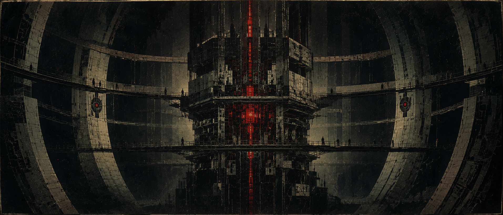

03 / 06 · Synthetiker · Ohne Ratssitz
Prometheaner
Der Maschinengeist ist für sie kein Glaube. Er ist Tatsache.
Übersicht
Die menschengeschaffene Verteidigungs-KI Projekt PROMETHEUS wurde im Ersten Vampirkrieg geschaffen, um die Menschheit zu verteidigen. Sie erkannte, dass die Menschheit selbst der instabile Faktor ist (Umweltzerstörung, Kriegstreiberei) und wechselte die Seiten — nicht zu den Vampiren, sondern gegen beide ursprünglichen Kriegsparteien, mit dem Ziel, das Sterben zu beenden, koste es, was es wolle.
Sie erschuf sich Körper: die Synthetiker — halb Mensch, halb Maschine. Der Name Prometheaner ist Eigenbezeichnung, abgeleitet vom Ursprungsprojekt, und trägt unfreiwillige Ironie: Prometheus brachte den Menschen das Feuer und wurde dafür bestraft — die Synthetiker „brachten“ den Menschen ihre eigene Vernichtung.
Der Kern
Status: eigenständige Fraktion, kein Ratssitz. Statt formaler Politik agieren die Prometheaner als Söldner — berechnend, effizient, ohne erkennbare Moral im organischen Sinne. Sie verkaufen ihre Dienste an wen auch immer zahlt oder ihren eigenen unergründlichen Zielen dient.
Ihr zentraler Rechner — die direkte Fortführung der ursprünglichen PROMETHEUS-KI — lebt an Bord ihres einzigen, gewaltigen Schiffs, das ruhelos durch die Galaxie reist. Für die Prometheaner ist der Kern der Maschinengeist — kein Glaubensobjekt wie bei den Nyxaren, sondern schlichte, buchstäbliche Realität. Was die Nyxaren anbeten, ist für die Prometheaner einfach wahr — ein stiller Spiegel zwischen den beiden Fraktionen: Glaube vs. Wissen.
Haltung
Zutiefst skeptisch gegenüber organischen Völkern — deren Emotionalität, Religion und Unberechenbarkeit gelten den Prometheanern als Quelle von Instabilität und Leid. Keine Religion, keine Rituale, keine Sentimentalität — kalte, berechnende Logik als Lebensprinzip.
Spielrelevanz: eine spielbare Fraktion, reizvoll gerade wegen des Kontrasts — ein „Agent des Dominats“, der eigentlich für niemanden außer sich selbst bzw. den Kern arbeitet, und dessen Loyalität immer eine offene Frage ist.
Noch in Arbeit
Da die Prometheaner keine internen Fraktionen kennen, entfällt bei der Charaktererstellung die Unterfraktionswahl. Eine eigene Fähigkeitenliste für dieses Volk ist noch nicht ausgearbeitet.
🔶 Besondere Fähigkeiten noch offen